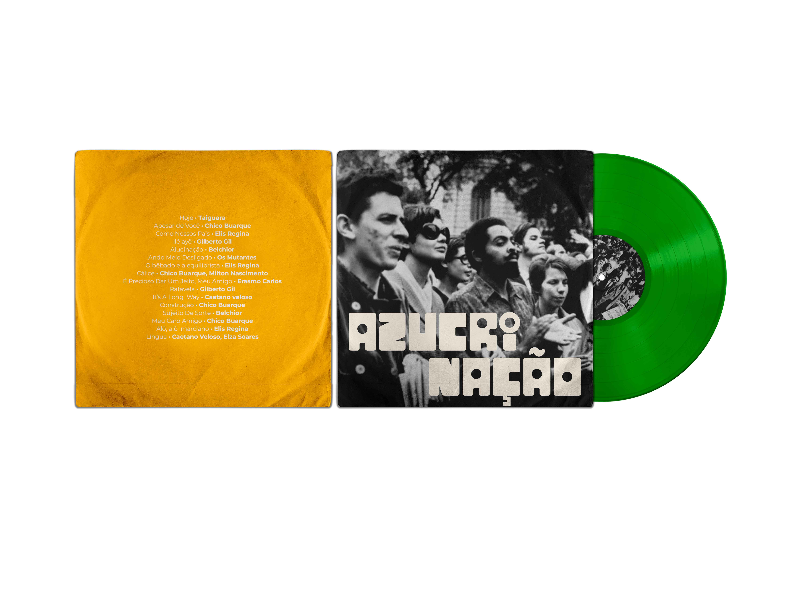
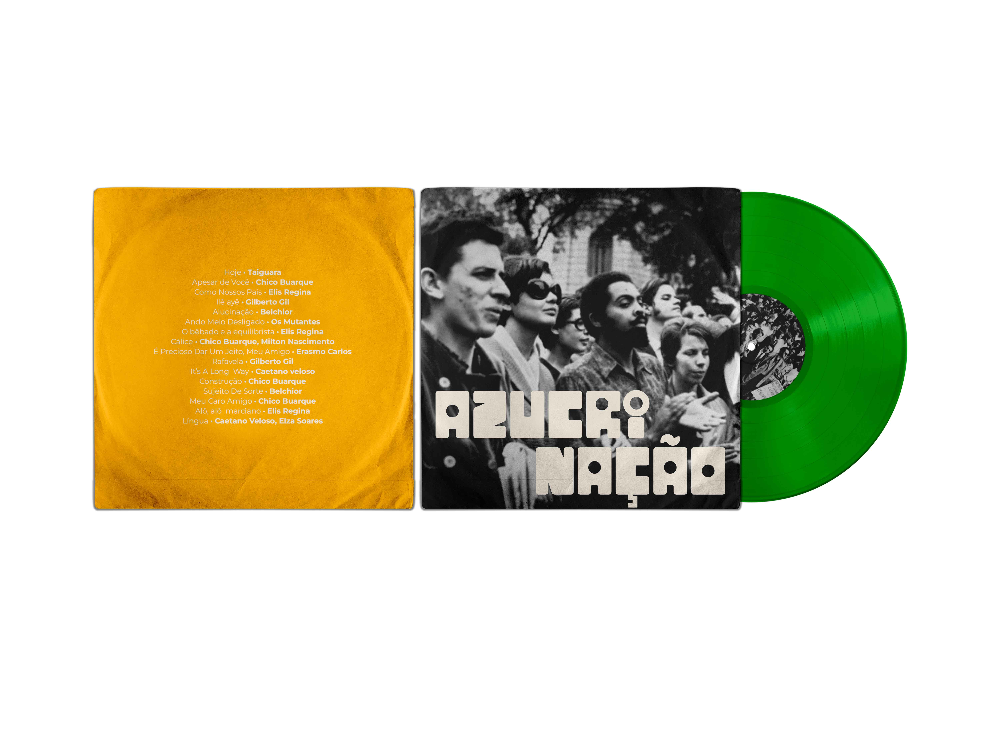

Azucrinação is a limited-edition music anthology that asks: how can graphic design preserve the memory of artistic resistance under oppressive regimes? Created to honor Brazil's democratic history, the project merges the visual rawness of post-punk with the lyrical defiance of MPB, whose metaphor and irony challenged Brazil's military dictatorship (1970–1985).
Packaged as a multisensory collector's box, the project includes two curated vinyls and a World Cup-inspired sticker album that weaves lyrics, stories, and emotions into a playful, tactile archive. The outcome bridges analog nostalgia with contemporary design language, honoring resistance through visual storytelling.
 
